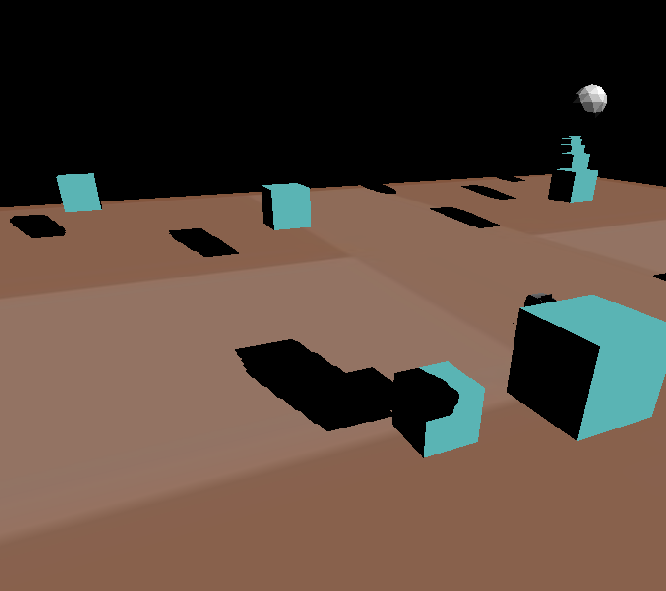
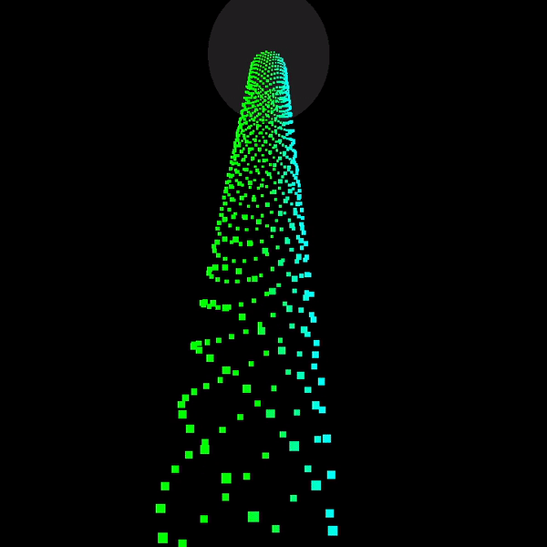

DirectX 11 Project
Role: Programmer, Level designer Engine: Own Engine using C++, DirectX 11
Time: May 2022 - August 2022 Group: 1 member

Techniques
Click on the boxes to get more info
Deferred rendering
For this implementation, 5 Render Targets and 1 Unorderd Access View was used. In the render targets 5 position, normals, ambient, diffuse and specular were stored. Since we are writing float4 to the render targets and it only needs 3 for the values, extra information could be stored in them. In this implementation the shinyness was stored in the specular render target to give an example on how it could be used. The next step is to do the light calculation on the compute shader. To do this, we send the render targets up to the compute shaders as Texture2D
Cube mapping
In order to implement cube mapping, a class containing 6 Render Target Views was added. These would then be rendered to. When everything was set up we draw to every render target from different perspective.
After the render targets had been filled, they are sent up to a pixel shader as a texture cube. With the help of our cameras position and the normal of the cube map object we can get the reflection.
Shadow mapping
In order to add shadows into the project, additional cameras were layed out on the same positions as the lights were located at. These camera's positions and directions would then be sent to a vertex shader were the depth was written to a depth texture. The picture below shows an example of the generated depth texture.
These textures were then sent to the pixel shader, where the distance to each fragment would be compared to the depth in the depth textues. If the distance to the vertice is larger than the one from the texture, we know that it should should be shadowed.
Lights (Directional light and spot light)
Particles
In this implementation, particles are draw using a geometry shader and are updated using a compute shader. First we need to create the particles, which is done on the CPU and then we bind these particles to a Unordered Access View. Now that we have the particles set up we can now start drawing and updating them. To draw them, we make use of a geometry shader. This geometry shader needs the camera's right and up vector. This is since we want to create billboarded quads out of the particles. If we do not create quad or change the particles, they will appear as 1px in size, which is very hard to see.
To update the particles, we make use of a compute shader, as mentioned earlier. The positions for the particles are stored in the unorderd access view, and to update them we need to find the right particles and then update that float3. To animate them dependant on time, we send in the time as a constant buffer.
Obj-parser + Submesh support
This was the first technique that was implemented for this project. The reason to why it was implemented first, was to load in more complex .obj models used for testing other techniques. The obj-parser functions by saving all the read vertice data in different vectors, where all the collected data is stored in a struct. This data can then be utulised by the scene objects, creating the models and objects seen in the project. While the obj-parser reads through the file, it saves the vertice data in a format which is then used to create index buffers, reducing the amount of memory consumed.
Frustum Culling
To implement this, I used the DirectXCollision library. With this library I got access to the BoundingBox struct, which greatly aided in the simplicity of the implementation. To create the bounding box, the obj-parser had to be modified to save the bottom left and top right positions. With these, bounding boxes were created. Next was to create the quad tree, which was done by recursivley creating children and giving them 1/4 size of the parents bounding box. When both the tree and the objects bounding boxes had been created, we let the objects "fall" into the tree in order to see which node they end up in. In this implementation, two different nodes can point to the same object, but this is not a problem since it is handled later on. Lastly, the camera needs a box in which to intersect the tree with. Luckily, the DirectXCollision library provides us with a so called BoundingFrustum, which we use.
Now everything is set up and the culling can begin. To cull unseen objects we send in our BoundingFrustum and compare it to the trees bounding boxes. For the boxes which are hit, we navigate down the tree and check their children, this is done recursivley until the leaf node is reached. We then add all the objects which it contains, and here we make sure we do add an object twice. When all is done we cull objects that are definetely not seen by the camera.
Tesselation
For this technique, the pipeline was altered to include the tesselation stage. By adding both a domain and hull shader, we could tesselate and increase the complexity of the models. In order to control the amount of tesselation, the position of the camera was sent to the hull shader, where the distance to each vertice determined if it should be tesselated. For this implementation, we did not make use of displacement textures, however this is something I explored in other projects.